כל מה שצריך לדעת כדי לעבוד במערכת — משליחות ועד תשלום
המדריך הזה מסכם, שלב אחר שלב, איך שגריר עובד עם המערכת: מהרשמה והתחברות, דרך פתיחת בקשה לאירוע ומעקב אחר התקציב שאושר, ועד הגשת חשבוניות ומעקב אחרי הסטטוס שלהן מול קק״ל ועמיאל. כל שלב מלווה בצילומי מסך מהמערכת עצמה. אפשר לקרוא ברצף מההתחלה, או לחפש נושא ספציפי בתיבת החיפוש למעלה.
הרשמה למערכת
שגריר שמגיע למערכת בפעם הראשונה נרשם דרך טופס הרשמה אחד, שמחליף את טופס הקבלה המודפס הישן לתוכנית השגרירים.
למה זה מיועד
טופס ההרשמה פתוח לכל מי שמצטרף לתוכנית השגרירות של קק״ל. הטופס אוסף את כל הפרטים שבעבר נאספו בטופס קבלה נפרד — פרטי זהות ויצירת קשר, פרטי המוסד והארגון השולח, תפקיד ורמת מעורבות בתוכנית, ותאריכי השליחות הצפויים.
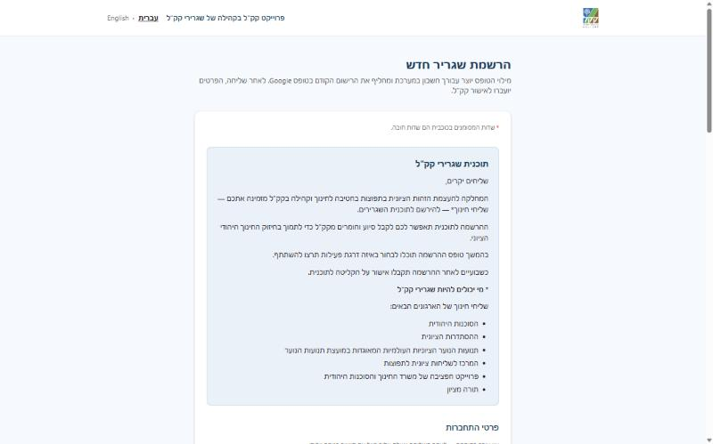
שלבי המילוי
- 1פרטי התחברות וזהותשם מלא בעברית ובשפה המקומית, כתובת מייל (זו שתשמש להתחברות בעתיד) ומספרי טלפון ליצירת קשר.
- 2פרטי הארגון והמוסדהארגון השולח, סוג המוסד והעיר שבה פועל השגריר, לצד התפקיד המדויק בשליחות.
- 3רמת המעורבות בתוכנית ותאריכי השליחותבחירה בין נאמן קק״ל, עמית קק״ל או רכז קק״ל, וטווח התאריכים הצפוי של השליחות — נקודת ההתחלה והסיום המשוער.
- 4שליחה לאישורלאחר השליחה הבקשה עוברת לבדיקת צוות קק״ל (ראו התחברות), והשגריר מקבל גישה למערכת רק לאחר האישור.
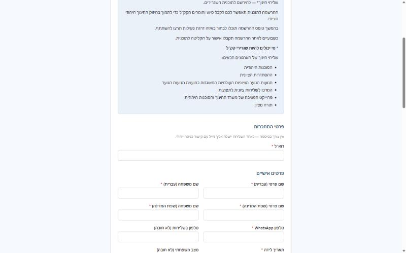
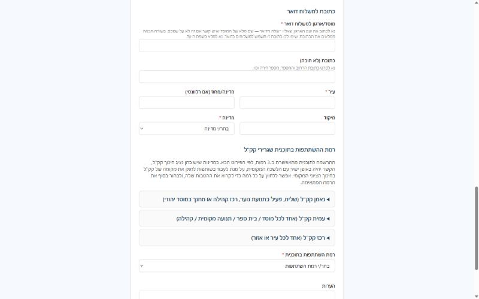
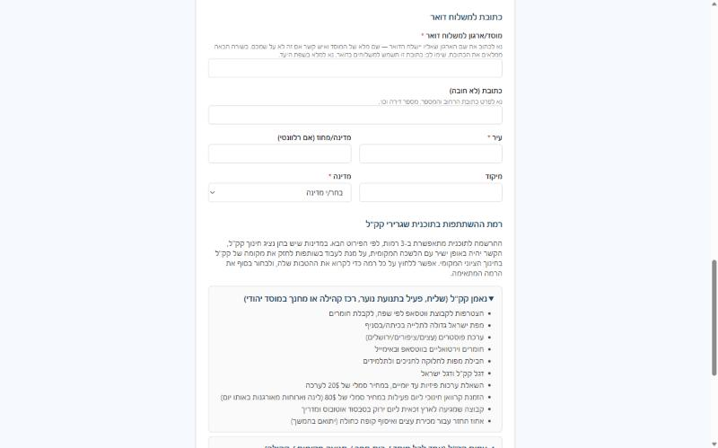
התחברות למערכת
לשגרירים אין סיסמה — ההתחברות נעשית בלחיצה על קישור חד-פעמי שמגיע למייל.
בעמוד הכניסה יש שתי כרטיסיות: כרטיסיית ״שגריר״ וכרטיסיית ״צוות״. שגריר מזין את כתובת המייל שאיתה נרשם ולוחץ על שליחת קישור כניסה. בתוך דקה מגיע למייל הודעה עם קישור כניסה חד-פעמי — לחיצה עליו מתחברת אוטומטית למערכת, בלי צורך בסיסמה.
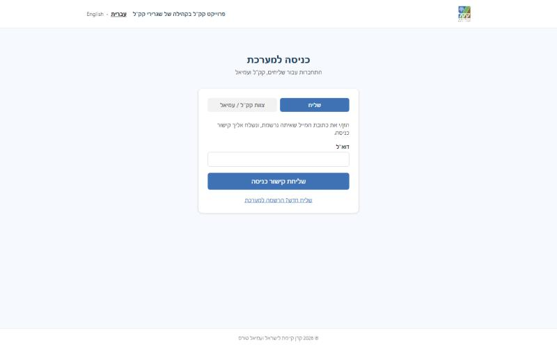
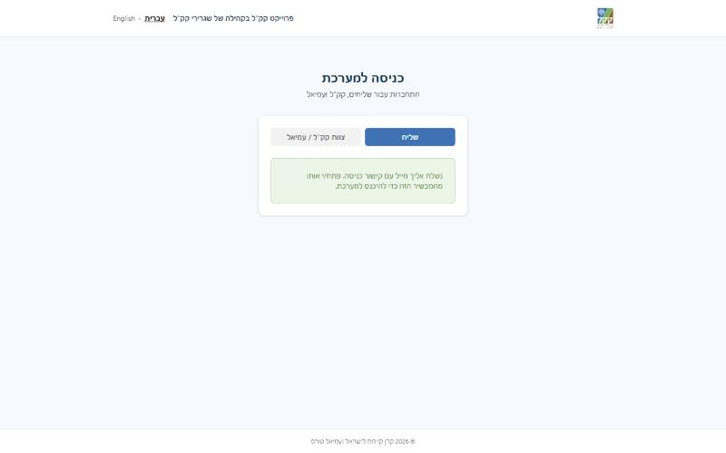
מסך הבית (הדשבורד)
מסך הבית הוא נקודת המוצא בכל כניסה למערכת — הוא מרכז את כל האירועים של השגריר ואת הסטטוס העדכני של כל אחד מהם.
כל אירוע מוצג כשורה או כרטיס נפרד, עם תגית סטטוס צבעונית שמראה במבט חטוף איפה הוא עומד — ממתין לאישור תקציב, מאושר ופעיל, או שיש בו חשבונית שדורשת תשומת לב. מכאן אפשר גם לפתוח בקשה לאירוע חדש.
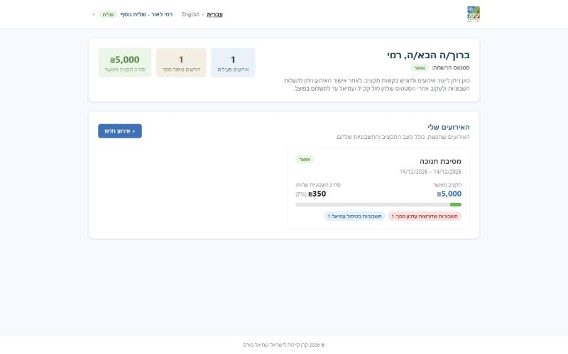
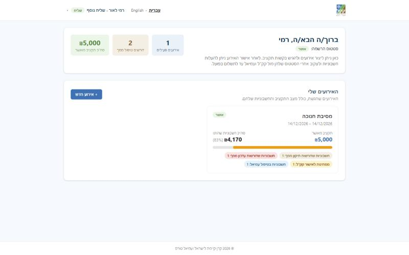
פתיחת בקשה לאירוע חדש
בקשה לאירוע היא הצעד הראשון בכל פעילות: היא כוללת את פרטי האירוע, בקשת התקציב, ורשימת הספקים המתוכננים — ועוברת לאישור קק״ל לפני שמתחילים להוציא כספים בפועל.
הטופס בנוי כמה שלבים רצופים, כדי שלא יהיה עמוד אחד עמוס מדי:
- 1פתיחהשם האירוע, סוג הפעילות והמקום (עיר ומדינה) שבו הוא מתקיים.
- 2פרטי האירועתאריכים, קהל היעד ותיאור קצר של מטרת האירוע — המידע שעל בסיסו קק״ל בודק את הבקשה.
- 3בקשת תקציבהסכום המבוקש לאירוע ופירוט הסעיפים שעליהם הוא מתבסס (למשל אולם, הסעה, קייטרינג) — זה הסכום שקק״ל יבדוק ויאשר, במלואו או בחלקו.
- 4פרטי ספקיםרשימת הספקים שמתוכננים לעבוד עם השגריר באירוע, כולל תחום הפעילות של כל ספק.
- 5נוכחות ומידע לוגיסטיפרטים נוספים על אופן ביצוע האירוע וההיערכות אליו.
- 6הצהרותאישור השגריר שהפרטים נכונים ושהוא מכיר בכללי השימוש בתקציב ובדיווח על הוצאות.
- 7שליחה לאישורהאירוע עובר לטיפול צוות קק״ל, והשגריר יכול לעקוב אחרי הסטטוס במסך הבית.
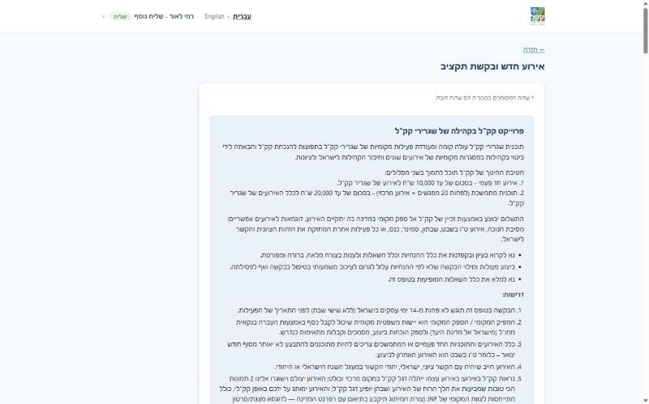
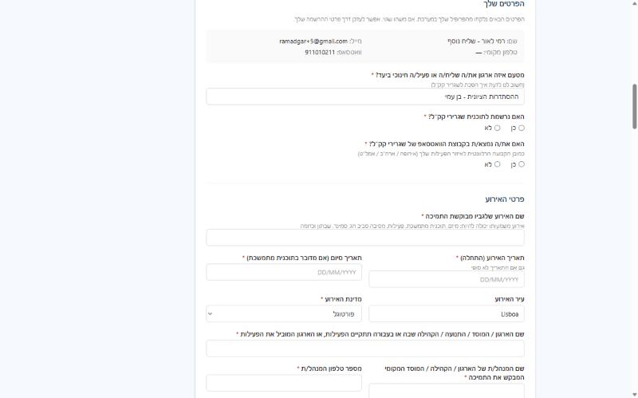
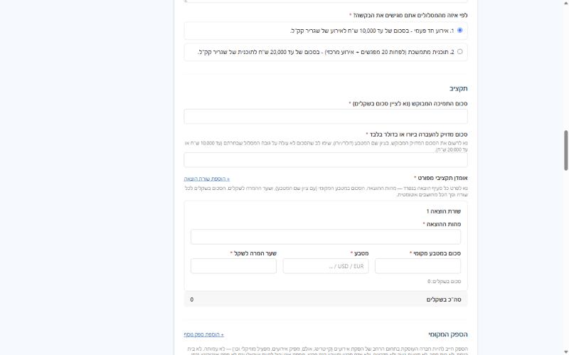
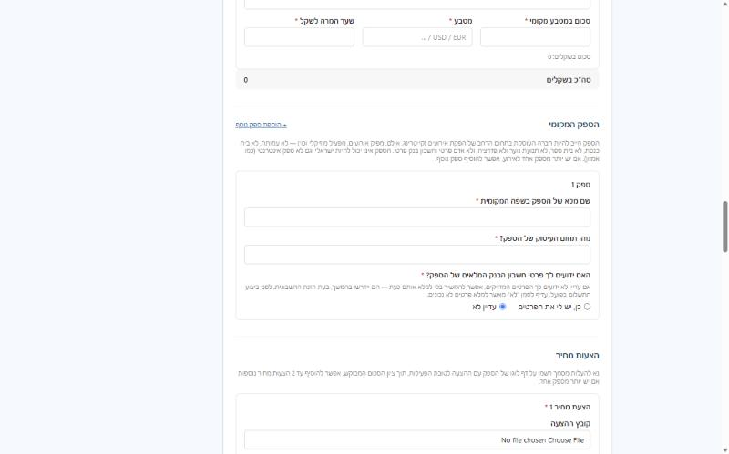
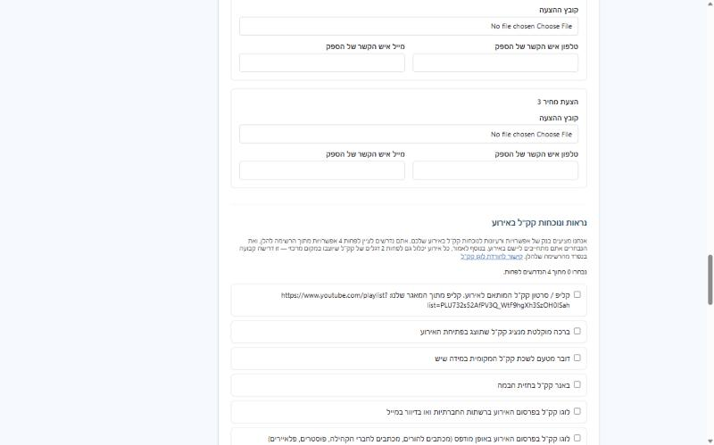
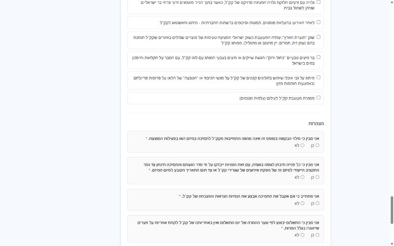
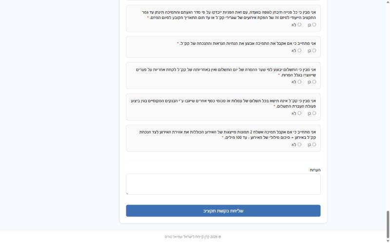
מעקב אחר האירוע והתקציב
מרגע שהבקשה נשלחה, עמוד האירוע הופך למקום שבו רואים את סטטוס האישור ואת היחס בין התקציב שאושר להוצאות בפועל.
קק״ל בודק את הבקשה ויכול לאשר אותה במלואה, לאשר חלק מהסכום המבוקש, או לבקש פרטים נוספים לפני שמחליטים. עמוד האירוע מציג את הסכום שאושר בסופו של דבר, ולצדו את סך החשבוניות שהוגשו עד כה — כך שקל לראות כמה מהתקציב נוצל וכמה עדיין נותר.
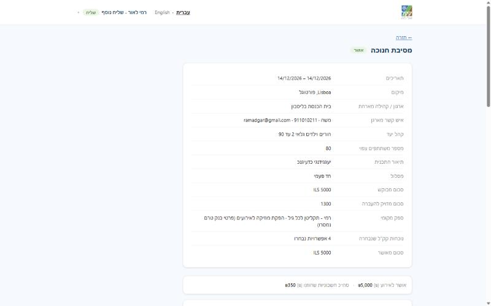
הגשת חשבוניות
אחרי שהתקציב אושר ושגריר ביצע הוצאה בפועל מול ספק, הוא מגיש את החשבונית במערכת לבדיקת קק״ל.
רשימת החשבוניות של האירוע נגישה מתוך עמוד האירוע, ומכאן מוסיפים חשבונית חדשה:
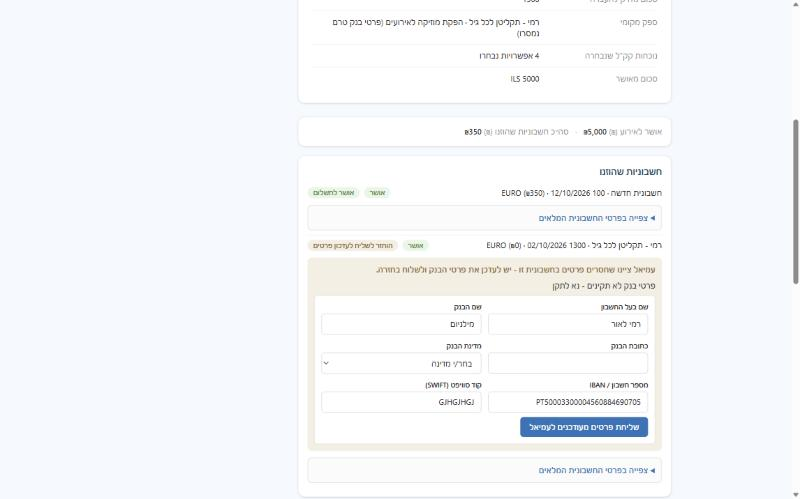
הפרטים שצריך למלא
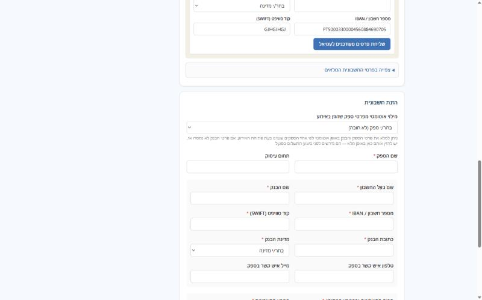
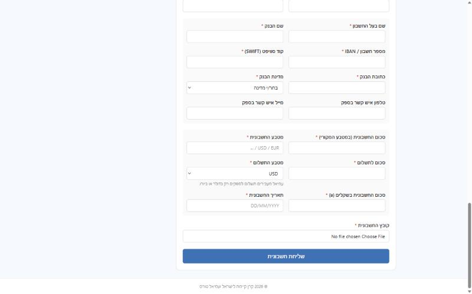
אחרי ההגשה אפשר לפתוח כל חשבונית ולראות את כל הפרטים שהוזנו, כולל קובץ החשבונית שהועלה:
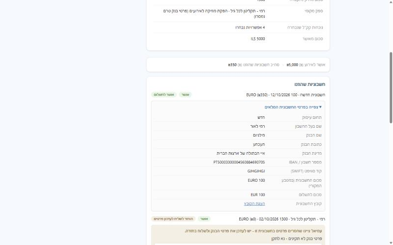
מעקב וטיפול בחשבונית
לכל חשבונית יש סטטוס שמלווה אותה בדרך מהשגריר, דרך בדיקת קק״ל, ועד התשלום בפועל על ידי עמיאל. חלק מהסטטוסים דורשים פעולה מהשגריר.
ממתינה לבדיקה ממתינה
חשבונית שהוגשה ועדיין לא נבדקה על ידי קק״ל. אין צורך לעשות דבר בשלב הזה — היא תמתין בתור הבדיקה.
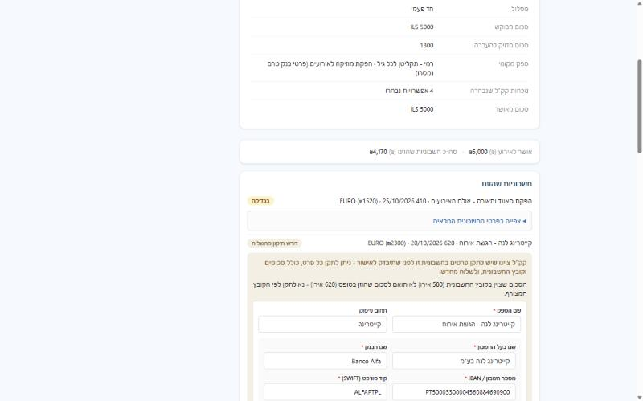
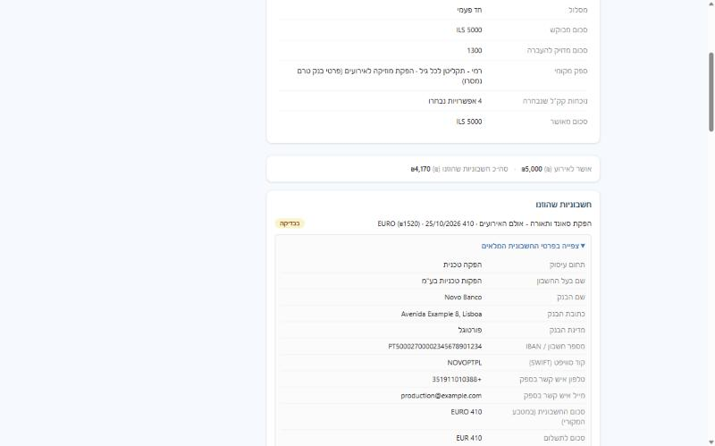
דורשת תיקון דורשת תיקון
קק״ל מצא בעיה בחשבונית — למשל פער בין הסכום בקובץ לסכום שהוזן בטופס — ומחזיר אותה לשגריר עם הערה מדויקת, מבלי לדחות אותה. השגריר יכול לפתוח את החשבונית, לקרוא את ההערה ולתקן את הפרטים השגויים ולשלוח שוב.
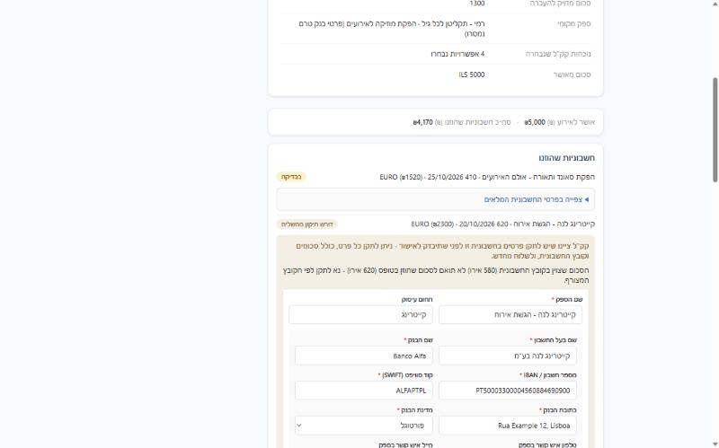
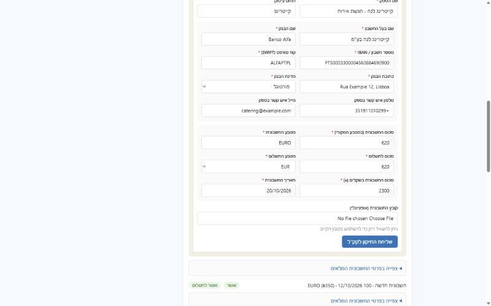
הוחזרה מעמיאל לתיקון הוחזרה לשגריר
לעיתים הבעיה מתגלה רק בשלב התשלום בפועל — למשל פרטי בנק שלא תואמים למטבע שהוזן, או אסמכתא חסרה. במקרה כזה עמיאל מחזיר את החשבונית לשגריר, באופן דומה להחזרה לתיקון מקק״ל: יש הערה מדויקת, ואפשר לערוך ולשלוח שוב בלי לפתוח חשבונית חדשה מאפס.
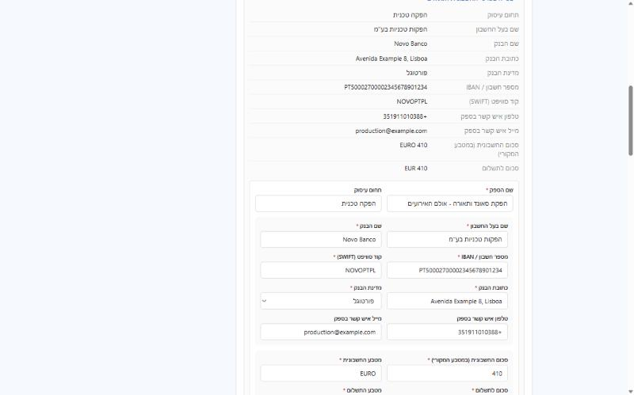
מאושרת מאושרת / שולם לספק שולם
לאחר אישור קק״ל והעברת התשלום בפועל על ידי עמיאל, פרטי החשבונית נשארים נגישים לצפייה — כולל הסכום ששולם בסופו של דבר, גם אם היה בו הבדל שער מול הסכום המקורי בחשבונית.
טבלת מצבי חשבונית — מדריך מהיר
סיכום של כל מצב שחשבונית יכולה להיות בו, ומה נדרש מהשגריר בכל אחד מהם.
| סטטוס | מה קרה | מה נדרש מהשגריר |
|---|---|---|
| ממתינה | הוגשה וממתינה לבדיקת קק״ל | אין פעולה נדרשת |
| דורשת תיקון | קק״ל מצא פער או חוסר ורוצה לתקן ולא לדחות | לקרוא את ההערה, לתקן ולשלוח שוב |
| מאושרת | קק״ל אישר, עוברת לטיפול עמיאל לתשלום | אין פעולה נדרשת |
| הוחזרה לשגריר | עמיאל מצא בעיה בשלב התשלום (למשל בפרטי הבנק) | לקרוא את ההערה, לתקן ולשלוח שוב |
| שולם | התשלום הועבר בפועל לספק | אין פעולה נדרשת — החשבונית סגורה |
| נדחתה | קק״ל קבע שהחשבונית לא תאושר | אין פעולה נדרשת במערכת; לפנות לקק״ל במידת הצורך |
שאלות נפוצות
כמה שאלות שחוזרות על עצמן בעבודה היומיומית עם המערכת.
איך מעדכנים את השם שלי במערכת?
לחיצה על השם שלכם בפינה העליונה של המסך פותחת תפריט קטן — בוחרים ב"הפרופיל שלי". שם אפשר לעדכן את השם הפרטי ושם המשפחה (בעברית ובשפה המקומית) ולראות את שאר הפרטים שלכם. כתובת המייל משמשת לכניסה ולא ניתנת לשינוי; לעדכון פרטים אחרים יש לפנות לצוות קק״ל.
איך בוחרים תאריך בטפסים?
בכל שדה תאריך אפשר להקליד את התאריך בפורמט יום/חודש/שנה (DD/MM/YYYY) — הלוכסנים נוספים לבד — או ללחוץ על סמל לוח השנה שבקצה השדה ולבחור יום מתוך היומן.
אני גר/ה בארצות הברית — מה צריך לבחור בהרשמה?
כשבוחרים "ארצות הברית" בשדה המדינה, מופיע שדה נוסף לבחירת המדינה בתוך ארה״ב (למשל ניו יורק או קליפורניה). זהו שדה חובה.
לא קיבלתי קישור כניסה למייל, מה עושים?
לרוב הקישור מגיע תוך דקה. אם הוא לא הגיע, שווה לבדוק תיקיית ספאם/דואר זבל, ואז פשוט לבקש קישור כניסה חדש במסך הכניסה — אפשר לבקש קישור חדש כמה פעמים שצריך.
לחצתי על הקישור אבל קיבלתי הודעת שגיאה
קישור כניסה הוא חד-פעמי: אם הוא נפתח כבר פעם אחת (למשל בטעות בלחיצה מקדימה, או במכשיר אחר), הוא כבר לא תקף. הפתרון הוא לבקש קישור חדש ולהקפיד לפתוח אותו פעם אחת בלבד, במכשיר שבו רוצים להישאר מחוברים.
אפשר להגיש חשבונית לפני שאושר תקציב לאירוע?
לא — יש להגיש בקשה לאירוע ולקבל אישור תקציב (מלא או חלקי) לפני שמגישים חשבוניות על הוצאות באותו אירוע. ראו פתיחת בקשה לאירוע חדש.
החשבונית שלי חזרה אלי פעמיים — זה תקין?
כן, זה אפשרי: בפעם הראשונה קק״ל יכול להחזיר לתיקון פרטים בטופס, ובהמשך עמיאל יכול להחזיר שוב אם מתגלה בעיה נקודתית בשלב התשלום (למשל אסמכתא חסרה). בשני המקרים יש הערה מפורטת שמסבירה מה לתקן.
הסכום ששולם בפועל שונה מהסכום בחשבונית — למה?
כשהחשבונית במטבע שונה מהמטבע שבו בוצע התשלום בפועל, מתבצעת המרה לפי שער החליפין בעת התשלום — לכן יכול להיות הבדל קטן בין הסכום המקורי לסכום ששולם בסופו של דבר.
איפה אני רואה כמה מהתקציב שאושר כבר נוצל?
בעמוד האירוע עצמו — ראו מעקב אחר האירוע והתקציב. הוא מציג את הסכום שאושר לצד סך כל החשבוניות שהוגשו עד כה.
לא מצאתם תשובה למה שחיפשתם? אפשר לפנות לצוות קק״ל או עמיאל שעובד איתכם.